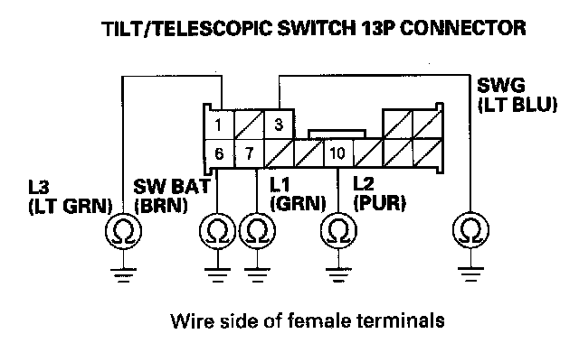
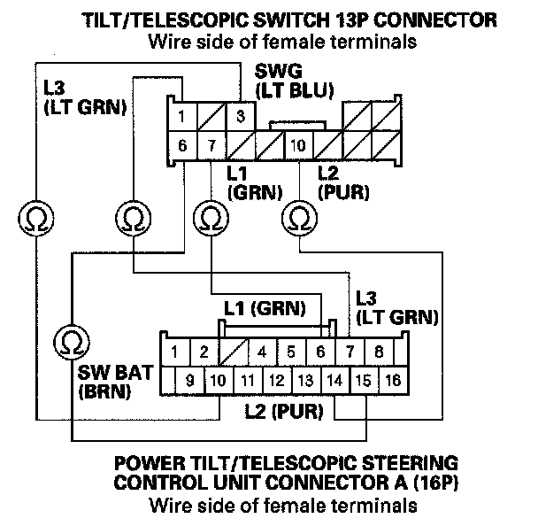

B1835
DTC B1835: Tilt/Telescopic Switch Signal Input ErrorNOTE: If you are troubleshooting multiple DTCs, be sure to follow the instructions in B-CAN System Diagnosis Test Mode A.
1. Clear the DTC with the HDS.
2. Turn the ignition switch OFF and then back ON (II).
3. Operate the tilt/telescopic switch in each direction for more than 3 seconds each.
4. Check for DTCs with the HDS.
Is DTC B1835 indicated?
YES - Go to step 5.
NO - Intermittent failure. The power tilt/telescopic steering system is OK at this time. Check for loose or poor connections at the tilt/telescopic switch connector and at the power tilt/telescopic control unit connector.
5. Turn the ignition switch OFF.
6. Test the tilt/telescopic switch.
Is the switch OK?
YES - Go to step 7.
NO - Replace the switch.
7. Disconnect power tilt/telescopic steering control unit connector A (16P).
8. Disconnect the tilt/telescopic switch 13P connector.

9. Check for continuity between body ground and tilt/telescopic switch 13P connector terminals No. 1, No. 3, No. 6, No. 7, and No. 10 individually.
Is there continuity?
YES - Repair short in the wire.
NO - Go to step 10.

10. Check for continuity between power tilt/telescopic steering control unit connector A (16P) terminals No. 7, No. 6, No. 10, No. 14, and No. 15 and the tilt/telescopic switch 13P connector terminals No. 1, No. 7, No. 3, No. 10, and No. 6 respectively.
Is there continuity?
YES - Replace the power tilt/telescopic steering control unit.
NO - Repair open in the wire.